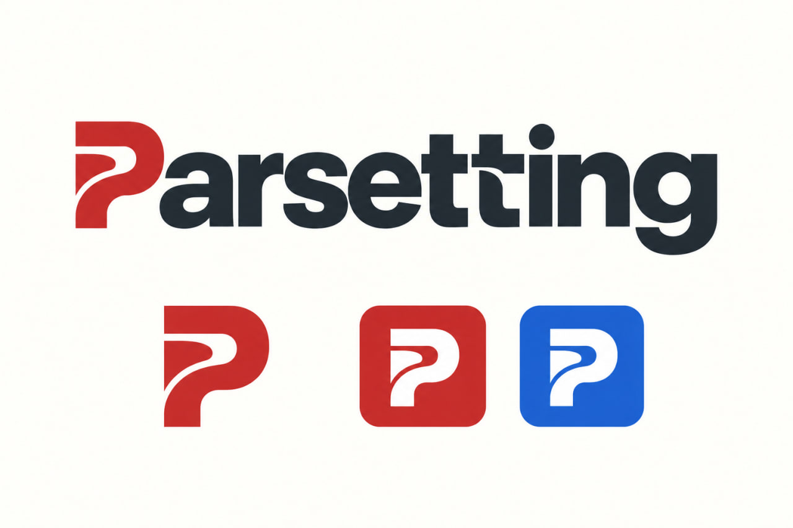
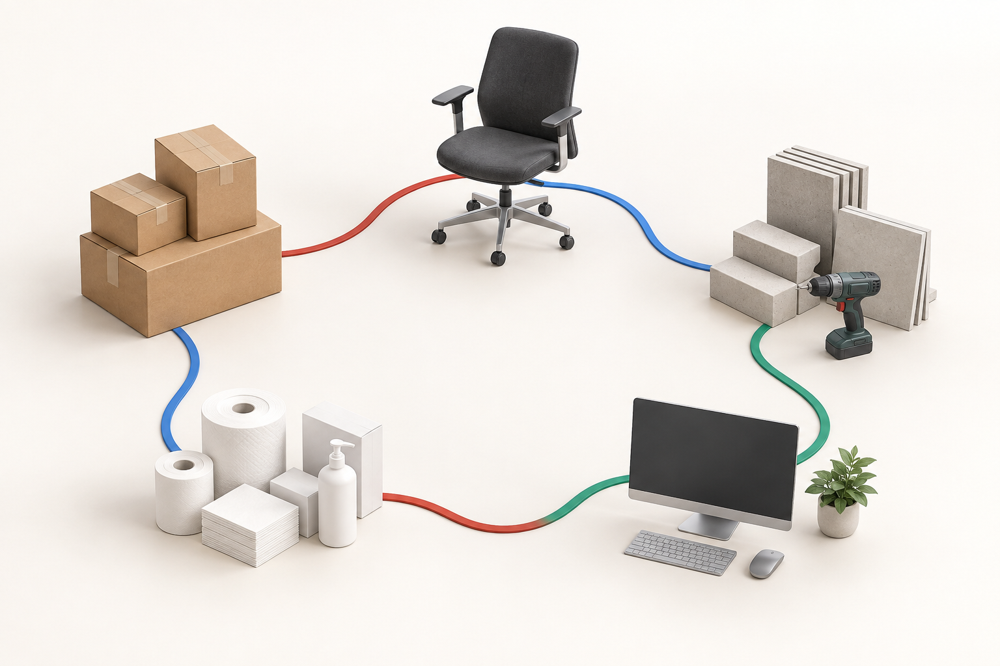

Расчётчик01
Из чего складывается
поставка?
Группы товаров, производители, поставщики, количество и цены — рядом с тендером.

ДЛЯ КОМАНД, КОТОРЫЕ ВЕДУТ ТЕНДЕРЫ
Тендер проходит через несколько рук.
Его детали остаются на месте.
Ответственный разбирает входящие, расчётчик готовит состав поставки, менеджер и закупщик продолжают работу. Данные тендера остаются в общей системе.
WINDOWS-ПРИЛОЖЕНИЕ · ТЕСТОВЫЕ ДАННЫЕ
Группируйте позиции, указывайте количество и стоимость. Расчёт остаётся рядом с тендером.
Шесть реальных экранов на демонстрационных данных. На встрече покажем ваш сценарий.
01 / ОБЩАЯ КАРТИНА
Когда расчёт превращается в закупку, а закупка — в поставку, команде нужны те же данные.
Ниже — схемы рабочего процесса на условном примере поставки.
Группы товаров, производители, поставщики, количество и цены — рядом с тендером.
Резерв и состояние комплектующих помогают увидеть, что ещё нужно для поставки.
Неделя отгрузки, ответственные и обсуждение доступны в общем рабочем процессе.
02 / ОДНА СИСТЕМА
Клиент для команды, инструменты импорта и сервер для вашей базы. Это один комплект, а не три подписки.
Расчёт, закупка, статусы, резервы, комментарии и план отгрузки.
Инструменты импорта из ЕИС и Bico. Доступ к платным источникам подключается отдельно.
PServer обслуживает общую базу на вашем сервере Windows и её резервное копирование.
Сотрудники работают в Windows-приложении. Подключение из офиса, удалённый доступ и общую папку проверяем при запуске тестового периода. Отдельные учётные записи администратора, руководителей и сотрудников. Доступ к действиям определяется ролью.
03 / КОМУ ПОДОЙДЁТ
Разные товары — знакомый процесс: рассчитать поставку, согласовать закупку, проверить резерв и подготовить отгрузку.
Считаете состав поставки из нескольких позиций.
Передаёте расчёт менеджеру и закупщику.
Контролируете резервы и отгрузки по неделям.
Если нужен только поиск закупок или полноценный складской учёт, обсудим это до тестового периода. Parsetting не заменяет бухгалтерию.

РАЗНЫЕ ТОВАРЫ. ОБЩИЙ ПРОЦЕСС.ПОД ВАШУ ПРЕДМЕТНУЮ ОБЛАСТЬ
Мебель, строительные материалы, расходные товары, оборудование и другие направления. Обсудим ваши справочники, состав поставки и этапы работы.
Особые требования отрасли и нужные доработки проверяем до подключения. Подберём подходящий сценарий и согласуем объём адаптации.
04 / СТОИМОСТЬ
Тестовый период — 30 дней бесплатно с согласованной даты запуска. Без карты и автоматического продления.
Небольшая команда: по одному специалисту на направление, общий рабочий процесс.
Несколько сотрудников в направлениях: руководители, расчётчики, менеджеры и закупка.
Один комплект — одна лицензия компании. В обоих тарифах доступен весь рабочий процесс и существующие роли, включая руководителей. Тарифы отличаются количеством мест и временем консультаций; ограничений «один расчётчик на компанию» нет.
Как считаем места. Каждая активная учётная запись сотрудника занимает одно место, включая администратора и руководителей. Сервис парсинга место не занимает. Неактивные сотрудники остаются в истории и в лимит не входят.
Проверить всей командой. Бесплатный тестовый период — 30 дней, до 15 активных сотрудников. До запуска поможем подобрать роли и согласовать дату начала.
Показываем программу, обсуждаем команду и подготовку базы. Затем выдаём тестовую лицензию.
Поможем активировать лицензию компании для её PServer. Доступны общий тестовый период и выбранный тариф; сотрудникам не нужны отдельные ключи.
После тестового периода — счёт и лицензия на согласованный срок. Без привязки карты и автоматических списаний.
Для первых трёх тестовых подключений стандартный запуск включён. В остальных случаях установка и обучение — 4 900 ₽ однократно, до двух часов на подготовленном сервере. Сервер и платные источники данных оплачиваются отдельно. Выбрать помощь с внедрением и поддержкой ↓
ВНЕДРЕНИЕ И ПОДДЕРЖКА
От установки на готовый сервер до подготовки базы под вашу команду. Согласуем задачи и стоимость до начала работ.
Когда сервер подготовлен и нужно подключить команду к Parsetting.
Полный запуск в согласованном объёме: установка, перенос данных и подготовка базы под сотрудников.
Разовая задача сверх времени консультаций, включённого в подписку.
Когда команде регулярно нужны консультации, настройки и обучение.
УЖЕ В ВАШЕЙ ПОДПИСКЕ
В «Команде» — 30 минут, в «Отделах» — 60. Разбор и исправление ошибок самой программы не расходуют это время и не требуют покупки дополнительных часов.
Сначала оценка, потом работы. Объём переноса, состояние данных, сроки и итоговую стоимость согласуем заранее. Базовое внедрение рассчитано на объём до шести часов; более крупную задачу оценим отдельно.
Понятные границы помощи. Подготовка сервера с нуля, настройка VPN, сложная очистка данных и индивидуальные доработки оцениваются отдельно. Поддержка — в рабочие дни; целевой первый ответ — следующий рабочий день.
05 / ПОМОЖЕМ НАЧАТЬ
На короткой встрече разбираем, как вы считаете, закупаете и отгружаете. Показываем подходящие действия в программе.
Поможем перенести данные в Parsetting, заполнить все нужные справочники и списки, подготовить базу к работе. Настроим учётные записи и проверим резервную копию. Объём, сроки и стоимость подготовки согласуем после оценки данных.
Берём ваши тендеры и сравниваем время работы, количество исправлений и удобство передачи между сотрудниками. Обсуждаем предложения команды. Продолжение — по вашему решению.
РАЗВИВАЕМ СИСТЕМУ ВМЕСТЕ С ВАМИ
Parsetting уже используется в ежедневной работе. Мы слышим обратную связь пользователей и открыты предложениям, которые делают работу удобнее.
Несколько отделов, филиалы, особые роли или цепочки согласования — готовы рассмотреть вашу структуру. Покажите процесс: обсудим возможности текущей версии, необходимые изменения, сроки и стоимость.
ЕЩЁ ПАРА ДЕТАЛЕЙ
Основной сценарий — работа команды с расчётом, закупкой и исполнением. Импорт помогает получать закупки, но подписки на сторонние базы в тариф не входят. Для Bico нужен собственный разрешённый доступ.
После настройки безопасного соединения с вашим PServer. Доступ к общей папке документов настраивается отдельно. Проверим оба сценария на вашей конфигурации во время тестового периода.
В базе вашей организации на сервере с PServer. Папка документов и резервные копии также находятся в согласованной инфраструктуре. Во время тестового периода проверяем доступ и восстановление тестовой копии. Доработку инфраструктуры и нестандартную настройку согласуем отдельно.
Рабочий клиент сейчас предназначен для Windows. На сайте представлены снимки реального интерфейса на тестовых данных. Полную работу покажем на демонстрации.
Да. У администратора, руководителей и сотрудников отдельные учётные записи. Права определяются ролью; состав пользователей и доступов обсуждаем при настройке.
Да, можем помочь с переносом данных, заполнением справочников товаров, поставщиков и других нужных списков, подготовкой базы к работе. Сначала оценим исходные файлы и объём. Сроки, стоимость и проверку результата согласуем до переноса.
Мы открыты предложениям и новым идеям. По запросу рассмотрим несколько отделов, филиалы, дополнительные роли и особые этапы согласования. Вместе определим, что подходит в текущей версии, а что потребует разработки, и обсудим сроки и стоимость.
База и накопленная история остаются у вас. Сохраняются просмотр в пределах прав сотрудника и резервное копирование; новые записи, изменения и импорт приостанавливаются до продления. Дата окончания видна администратору. После активации продления работа продолжается в той же базе.
Нет. Лицензия выдаётся организации для её PServer. Проверка выполняется на вашем сервере и не требует постоянного соединения с сервером лицензирования. Администратор управляет активными сотрудниками в пределах тарифа; учётная запись у каждого своя.
Да. При увеличении команды можно согласовать тариф с большим числом мест и обновить лицензию в том же PServer, без переноса истории в новую базу. Иерархию филиалов, особые роли и дополнительные согласования обсуждаем отдельно — это не автоматическая возможность тарифа.
После тестового периода — оплата согласованного периода по счёту, без автосписаний. Вопросы принимаем в рабочие дни; целевой первый ответ — следующий рабочий день. Время решения зависит от проблемы. Обновления и разбор ошибок входят в сопровождение; индивидуальные доработки согласуем отдельно.
Нет. Сначала небольшой согласованный набор данных. Полный перенос обсуждаем отдельно и выполняем после резервного копирования и проверки восстановления.
ПОСМОТРИМ НА ВАШУ РАБОТУ
Расскажите о вашей сфере и команде.
Мы открыты предложениям и новым идеям.